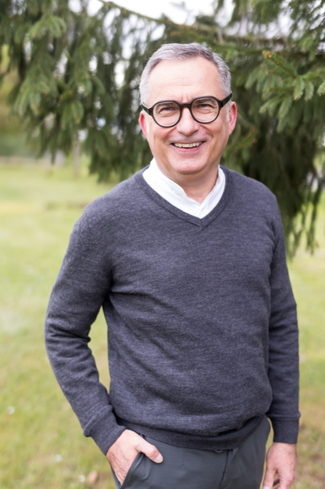

KI im Mittelstand.
Von jemandem, der
sie selbst einsetzt.
Ich bringe künstliche Intelligenz dorthin, wo sie bisher kaum ankommt: in Handwerksbetriebe, Familienunternehmen und Klassenzimmer. Nicht als Vortrag über Möglichkeiten, sondern als gezeigte Praxis.

Was ein Unternehmen tun kann,
ist bald keine Frage mehr.
Wofür es das tut, beantwortet keine Maschine.
Drei Formate, ein Anspruch.
Am Ende soll jemand etwas anders machen als vorher – nicht nur mehr wissen. Deshalb arbeite ich in allen drei Formaten mit echten Fällen.
Keynote und Impuls
Für Unternehmerkreise, Kammern, Verbände und Kongresse. Mit dem, was tatsächlich schon läuft – nicht mit dem, was Anbieter versprechen.
- 30 bis 60 Minuten, anschließend Gespräch
- Live-Demonstration statt Folienschlacht
- Auf Wunsch auf die Branche zugeschnitten
Projektwoche und Unterricht
Für Schulen und Hochschulen. KI nicht als Bedrohung erklärt, sondern ausprobiert – mit fertigem Lehrerskript und Material.
- Projektwochen ab Klasse 6
- Wirtschaftsbildung mit KI-Bezug
- Fortbildung für Lehrkräfte
Begleitung im Unternehmen
Für Betriebe, die nicht wissen, wo sie anfangen sollen. Wir suchen die zwei, drei Stellen, an denen KI heute schon Zeit spart – und setzen sie um.
- Bestandsaufnahme entlang echter Abläufe
- Umsetzung statt Konzeptpapier
- Klärung von Datenschutz und Verantwortung
Worüber ich spreche.
Vier Felder, in denen ich selbst arbeite – und über die ich deshalb nicht nur referieren, sondern berichten kann.
KI im Handwerk und Mittelstand
Was heute wirklich funktioniert – Angebote, Auswertungen, Texte, Bilder – und was noch teure Spielerei ist.
Nebenberuflich gründen mit KI
Wie sich mit heutigen Werkzeugen ein Geschäftsmodell prüfen lässt, bevor man Geld und Jahre investiert.
KI verstehen statt verbieten
Wie Schülerinnen und Schüler lernen, mit KI zu arbeiten – und wo sie ihr besser nicht glauben.
Verantwortung, wenn die Maschine mitdenkt
Wer haftet, wer entscheidet, was bleibt beim Menschen. Die Frage, die in den meisten KI-Vorträgen fehlt.
Wo ich es selbst mache.
Ich spreche über nichts, was ich nicht im eigenen Betrieb oder vor einer echten Klasse ausprobiert habe.
Ein Familienbetrieb als Testfeld
Als Gesellschafter eines Handwerksunternehmens setze ich KI dort ein, wo es Widerstand gibt: bei Auswertungen, Angeboten und Kundentexten. Was hier nicht funktioniert, empfehle ich nicht weiter.
Unterricht und Projektwochen
Ein ausgearbeitetes Lehrerskript, eine Projektwochen-Keynote und Unterrichtseinheiten zu Wirtschaft, Geld und KI – erprobt an Schulen, unter anderem in Leipzig und Berlin.
Bildung mit Haltung
In der gGmbH verbinde ich beides: die technische Seite und die Frage, wofür man das Ganze eigentlich einsetzt. Ohne diese zweite Hälfte wäre KI nur ein Effizienzwerkzeug.
Was ich dazu geschrieben habe.
Frei zugänglich, ohne Anmeldung.
AGI 2027
Was hinter der Prognose steckt, dass allgemeine künstliche Intelligenz näher ist, als die meisten annehmen.
KI als Stresstest der Marktwirtschaft
Was passiert mit Wettbewerb, Arbeit und Preisbildung, wenn Denken billig wird.
Nebenberuflich gründen mit KI
Der praktische Weg von der Idee zum geprüften Geschäftsmodell.
Massive KI-Durchbrüche
Was sich zuletzt tatsächlich verändert hat – und was nur nach Fortschritt aussah.
Neuromorphe KI
Warum die nächste Rechnergeneration dem Gehirn ähnlicher wird – und was das für den Energiebedarf heißt.
BLISSruption
Unternehmertum aus Berufung – ein Online-Kurs, in dem KI das Werkzeug ist, nicht das Thema.

„Die meisten KI-Vorträge erklären, was möglich wäre. Ich zeige, was ich gestern damit gemacht habe."
Ich bin Unternehmer, nicht Informatiker. Was ich über künstliche Intelligenz sage, stammt nicht aus Studien, sondern aus der täglichen Anwendung – in einem Handwerksbetrieb, in einer gemeinnützigen Gesellschaft und im Unterricht.
Das macht meine Perspektive schmaler als die eines Forschers und brauchbarer für alle, die morgen früh eine Entscheidung treffen müssen. Ich kenne die Werkzeuge, ich kenne ihre Grenzen, und ich weiß, woran Einführungsprojekte in kleinen Betrieben tatsächlich scheitern.
Der zweite Teil meiner Arbeit ist die Frage, die dabei meist untergeht: Wofür setzen wir das ein? Genau dort verbindet sich die Technik mit dem, woran ich ohnehin arbeite.
Sprechen wir darüber.
Vortrag, Projektwoche oder Begleitung im Betrieb – schreiben Sie mir in wenigen Sätzen, worum es geht und vor wem. Sie bekommen eine persönliche Antwort.
Anfrage schreibenOder direkt: michael.deck@impact4entrepreneurship.de